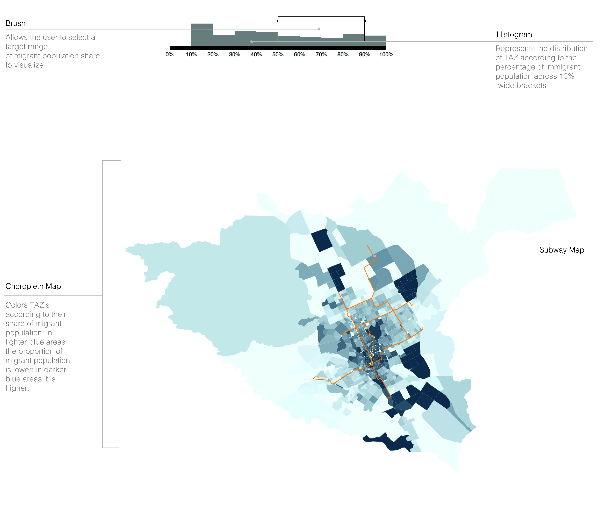
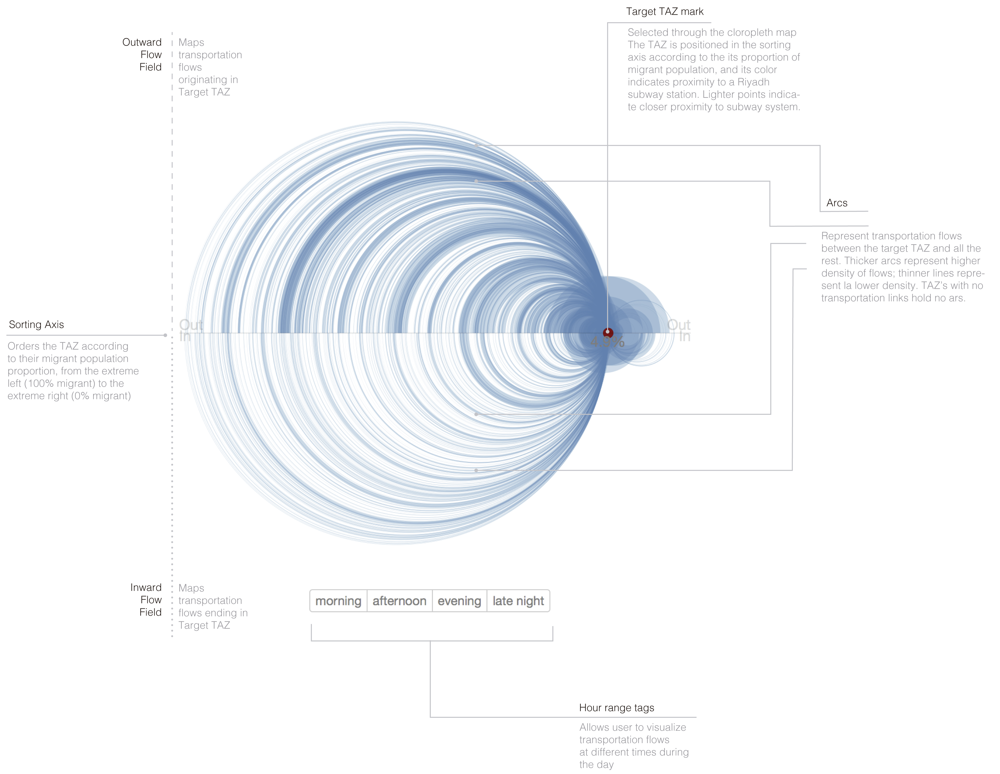

Current estimates suggest that a third of Riyadh’s inhabitants are migrants. The bulk of this population consists of an array of distinctive communities whose origins are located not only in neighboring Arab countries, but in from regions as far away from Saudi Arabia as the Pacific Rim and South Asia. Consistent with trends observed in other large urban agglomerations, the residential location of this sizeable migrant population is spatially segregated. Migrants make up a bigger share of neighbor-level populations in the city’s central area. In the city´s periphery, especially in the west and the east, migrant inhabitants are relatively less scarce.
In Riyadh, to this conventional residential segregation it should also be added a peculiar heterogeneity in the way migrants insert themselves in Riyadh’s economy. Most of Riyadh’s inhabitants work in the private enterprises, and make up 90% of the total workforce of the country’s private sector.
Due to these demographic, residential and labor characteristics, visualizing the way Riyadh’s migrant population relates to the city’s overall transportation workflows is significant for a number of reasons:
First, it serves as a vehicle to map the mobility experience of a significant part of Riyadh´s population. How do the approximately 2 million migrants living in the city move through Riyadh’s urban tissue?
Second, it provides valuable information to understand the potential changes in mobility patterns that would ensue from an increasing amount of Saudis changing their labor sites from public to private. As current public programs aspire to bring and increasing share of the Saudi population to the private sector, understanding the way in which migrant, private-sector working population works might be instrumental to provide some insights to the changes in transportation flows we might expect from this economic reconversion.
Third, it allows to understand in migratory terms the type of users that will be more prone to take the projected Riyadh subway, therefore allowing to have a better of understanding of its potential user demography.
Finally, it allows us to have with a quick way to analyze sociability patterns across Riyadh. How frequent are transportation flows between migrant and non-migrant zones? Are Riyadh’s neighborhoods primordially “enclaves” that receive and send people to zones with a similar proportion of migrant population, or rather, do they function as “hinges” that commonly unite two heterogeneous zones in terms of their population density?
All in all, these features provide a solid substantive basis to conduct an exploration of the way migration status bears upon the general traffic patterns of the Saudi capital.
METHODS DataAn ideal data structure to visualize the way in which migration affects transportation in Riyadh would be related to an individual-level panel data structure containing individual-level observations regarding origin and destination of trips without the Saudi capital. However, for logistic and data privacy reasons, this information was unavailable. Instead, we used Transportation Area Zone (TAZ) –level data. At this level of analysis, information was available regarding
(1) The area and location of the TAZ within Riyadh –available through a shape file;
(2) Basic demographic information of each –available through a database containing basic socio-demographic information obtained from the Saudi census, and
(3) Information regarding transportation patterns between TAZ, which were codified in several origin/destination databases built out of cell phone data.
OutputsThe project featured three main outputs:
A. Choropleth MapUsing the database on demographic characteristics of Riyadh’s TAZ’s, the first output sought to visualize differences across TAZ’s in terms of the proportion of migrant population each one had through cartographic means. This element included the following components:
A zoomable, TAZ-level map of Riyadh that colors each TAZ according to their migrant population;
A visualization of the projected course of the Riyadh subway system;
a brushing tool that allowed the user to make the map color only those TAZ’s whose proportion of migrant population fell under a specific interest range.
 B. Arc DiagramThe second output of the project sought to represent in a succinct, clear and readable way the transportation flows occurring to and from each of Riyadh’s TAZ’s. For this task, the project used the origin/destination matrix across TAZ to generate, for each TAZ, an arc diagram that would make visible the transportation flows originating from/culminating to each specific TAZ. By virtue of being a graphical device that relates elements arrayed along a one dimensional axis, an arc diagram was an ideal visualization strategy for the purposes of the project, as it allowed to map relationships between TAZ’s while still providing an orderly presentation according to the percentage of migrant population each had.
The arc diagram was composed by the following elements:
A sorting axis that ordered TAZ’s according to the proportion of their migrant population
A TAZ mark that indicated the specific TAZ whose transportation flows were visualized. This mark was positioned in the sorting axis according to the proportion of migrant population of the TAZ. Its color is related to its proximity to subway stations, with lighter colors indicating closer distance to the subway station.
A series of arcs that visualized transportation flows related to the Target TAZ. Arcs occurring in the upper half of the diagram represented outward flows; arcs represented in the bottom half of the diagram was related to inward flows. The thickness of the arcs represented the volume of transportation between the target TAZ and all other TAZ’s.
A series of buttons that allowed the user to visualize data according to four times during the day: morning, afternoon, evening, and late night.
 C. Interphasing between the Map and the Diagram.Finally, a third output consisted in interphasing the map and the arc diagram, allowing the user to select in the map a specific TAZ and generating its corresponding arc diagram.
TEAMSergio Galaz Garcia is an M.Arch candidate at MIT and a doctor in sociology candidate at Princeton University. His interests lie in the analysis and design exploration of the relationships between power, space and the everyday life in contemporary urban experienes.
Wayne Liu is currently in M.Arch ADV program at MIT. He is interested in how design and policy can together influence built environment. He also holds a BS in Architecture from Washington University in St. Louis.